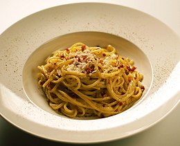

La pasta alla carbonara è un piatto caratteristico del Lazio, e più in particolare di Roma preparato con ingredienti popolari e dal gusto intenso. I tipi di pasta tradizionalmente più usati sono gli spaghetti o i rigatoni.
Le origini del piatto sono tuttora incerte e al riguardo esistono diverse ipotesi, la più accreditata delle quali riconduce la sua comparsa ad un'origine laziale.